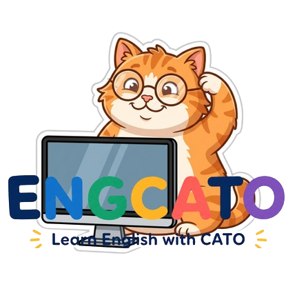

Ajak buah hati Anda berpetualang seru belajar Bahasa Inggris bersama CATO, kucing pintar AI berkacamata! Pendekatan interaktif yang dirancang khusus untuk melatih keberanian anak usia 4-12 tahun berbicara dengan percaya diri.

Sentuh jawabanmu dan lihat respon Cato!
Hello friend! Look at the picture! I see a cute little cat. What is the cat doing? Is it sleeping or hopping? 😸
Didesain dengan konsep gamifikasi dan AI interaktif agar anak belajar bahasa Inggris secara alami tanpa rasa bosan.
Speaking & Listening
Anak berbicara langsung dengan Cato dan menjawab pertanyaan sederhana untuk melatih skill Speaking dan Listening.
Reading & Pronunciation
Anak membaca buku cerita pendek dengan bersuara keras sementara Cato menyimak untuk melatih Reading dan Pronunciation.
Writing, Vocabulary & Understanding
Anak menyelesaikan teka-teki kata dan misi seru bersama Cato untuk mengasah Vocabulary dan Pemahaman.
Dirancang khusus menggunakan metode 3C (Cepat, Cermat, Cerdas) untuk menemani anak Anda belajar tanpa bosan.
Cato sangat cepat dalam menangkap dan merespon suara anak secara real-time, membuat interaksi terasa seperti mengobrol dengan teman asli.
Cato dengan cermat membetulkan pelafalan (pronunciation) aksen anak Indonesia secara ramah, menumbuhkan rasa percaya diri sejak dini.
Cato cerdas dalam memberikan metode gamifikasi, kuis adaptif, dan tantangan seru yang disesuaikan dengan kurikulum sekolah dasar.
Mulai dengan gratis dan pilih paket berlangganan sesuai kebutuhan belajar buah hati Anda. Tanpa komitmen tersembunyi.
Akses penuh 14 hari untuk mencoba sebelum berlangganan
Cocok untuk keluarga yang ingin membayar bulanan
Hemat 10%, komitmen penuh untuk satu tahun ajaran
Akses hemat untuk hingga 3 anak dalam satu rumah
Lebih dari 10.000+ orang tua di Indonesia telah mempercayakan belajar Bahasa Inggris buah hati mereka bersama Cato.
"Sebelumnya anak saya (6 tahun) sangat pemalu kalau diminta bicara bahasa Inggris. Tapi sejak ngobrol dengan Cato, dia jadi ketagihan! Cato sangat sabar membetulkan ucapannya yang keliru. Sekarang dia sering tiba-tiba ngomong bahasa Inggris di rumah. Luar biasa!"
"Game kuis kosakata di 'Play with Cato' seru sekali. Biasanya anak saya cuma main game kosong di HP, sekarang HP-nya dipakai untuk belajar kosakata baru setiap sore. Annual plan-nya sangat hemat untuk satu tahun ajaran penuh!"